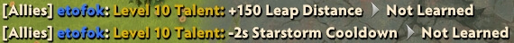

Upgrade Talents
This hotkey is not something that you use very often.
Literally up to 8 times in a very long game.
But there was a period of my life when I was a Turbo enjoyer, where it's not rare to get a big level up in the middle of a fight.
That's how I found out that having a hotkey for Upgrade Talent is more comfortable than not having it. I felt annoyed I had to press the "plus sign" with the cursor. This sounds ridiculous as I write this but it's true.

Upgrade Talent is fantastic on ` (grave), because you then select the left-or-right talent with 1 or 2 which are right next to it. It's instant and makes perfect sense.
- Upgrade Talents: `
- Upgrade Left Talent: 1
- Upgrade Right Talent: 2
- Upgrade Attributes: 3<- or ->none
Oversight?
Alt + 1 and Alt + 2 can't be used for talent upgrades.
When you try to use Alt for Upgrade Talent — the game just alerts the talent status in chat.

You may also want to unbind Upgrade Attributes to prevent accidentally selecting it.